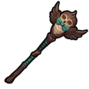

Poleiro da coruja
Cajado · Tier 3 · Nível 8
Um cajado complexo esculpido na forma da coruja de Lilu, Pollux. Por favor, não o balance demais.
Atributos
Ataque
88
Vida
3
Economia
Valor
1.950
Tempo de fabricação
6min
XP do comerciante
3.800
Trabalhadores: Carpinteiro 1
Receita

Madeira
× 21

Ervas
× 11
Marcos do projeto
5
Valor +25%
14
Tempo de fabricação -25%
24
Valor +25%
40
-4 Madeira
60
Chance de qualidade +2